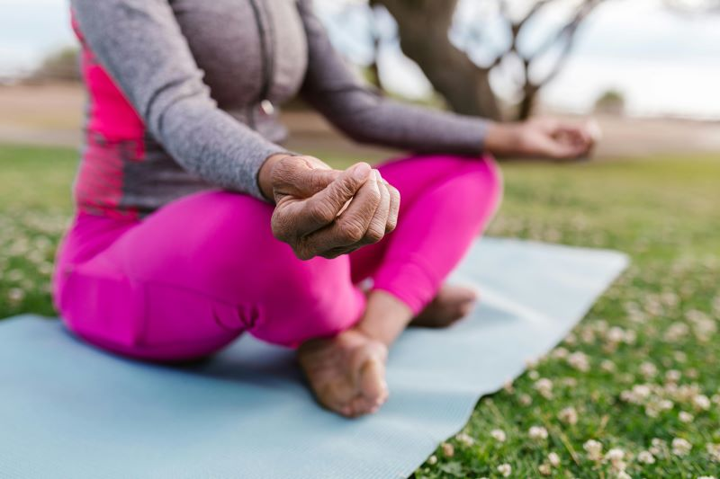

<html lang="en-US"></html>
  <head>
    <meta charset="UTF-8">
    <meta name="description" content="A website to introduce core yoga poses and how to perform them ">
    <meta name="author" content="Luke Armstrong-DuBois">
    <meta name="viewport" content="width=device-width, initial-scale=1.0">
    <title>Yoga Tutorial Site</title>
    <link rel="stylesheet" href="./css/style.css">
    <style>
        
      body {background-color: rgb(161, 200, 223)}
      h2 {color: rgb(44, 1, 72)}

      nav {
            float: right;
            padding: 0 10px 10px 10px;
        } 
        nav a {
            text-decoration: none; 
            padding: 8px; 
            color: black; 
            display: inline-block; 
        }   
    </style>
  </head>

  <body>
    <h1 style="text-align: center;">Yoga For Beginners</h1>

    <!-- navigation section -->
    <nav>
        <a href="Index.html">Homepage</a>
        <a href="poses.html">Beginner Poses</a>
        <a href="scheduling.html">Schedule making</a>
    </nav>
    <br />

    
    <!-- About my yoga practice section -->
    <h2><b>Why Practice Yoga?</b></h2>
    <div class="personal experience">
    <p><b>Here is why I started:</b></p>
    <ul>
        <li>Prevents <b>injury</b></li>
        <li>Forces you to be <b>mindful</b></li>
        <li>Good <b>exercise</b></li>
      </ul>
      <p>I started doing yoga in 2020 during the COVID lockdown because I couldn't go to my local gym.<br /> Over time, I started enjoying the practice, and it became my primary way of exercising.<br /> In 2022, I was able to teach yoga to 14-17-year-old kids, which deepened my <em>love</em> for the practice.</p>
    </div>

    <!-- External yoga quote section -->
    <div class="quote-section"></div>
      <p>Here is a quote from a yoga journal that captures why I practice:</p>
      <q>Yoga is a way to produce a chemistry of blissfulness. Once you are blissful by your own nature, you can deal with outside situations effortlessly.</q>
      <br />
     You can read the full page <a href="https://isha.sadhguru.org/yoga/yoga-for-beginners/">here</a>
    </div>

      <hr>
      <!-- yoga breathing section -->
      <h2>Yoga is all about breathing</h2>

      <p>Whether you're seated or balancing on one leg, you can practice yoga in any <dfn title="Sanskrit word for pose or effortless seat">asana</dfn>as long as your focused on your breath</p>
      
      <br />
      <p>When ready,<a href="poses.html">explore beginner yoga poses</a>
      


    
  </body>

</html>